Guia para criar uma página com duas colunas
Contents
Guia para criar uma página com duas colunas#
Este é o guia de como criar uma página com duas colunas no portal extranet da 1 da 2 para extranet usando Volto, o frontend do Plone 6.
Criação da página#
Clique no botão de adicionar conteúdo.
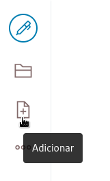
Escolha o tipo de conteúdo página.
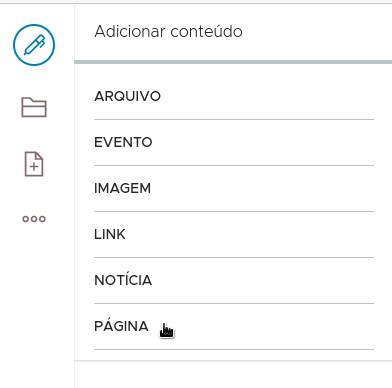
Preencha o título e adicione uma imagem ao bloco de texto. Clique no ícone + para adicionar um bloco. Escolha o bloco imagem.
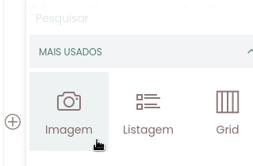
Envie uma imagem para ser o banner da página.
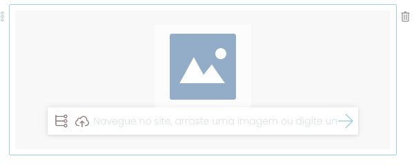
Clique no ícone + para adicionar um novo tipo de bloco. Clique no botão do bloco listagem para adicionar uma listagem.
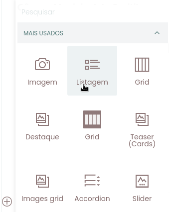
Adicione um critério no painel de configuração da listagem e escolha o critério Tipo.
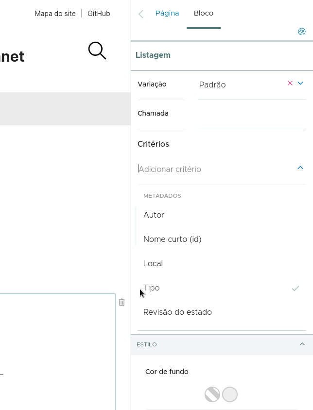
{kind=link}
Escolha o tipo Página como critério de tipos.
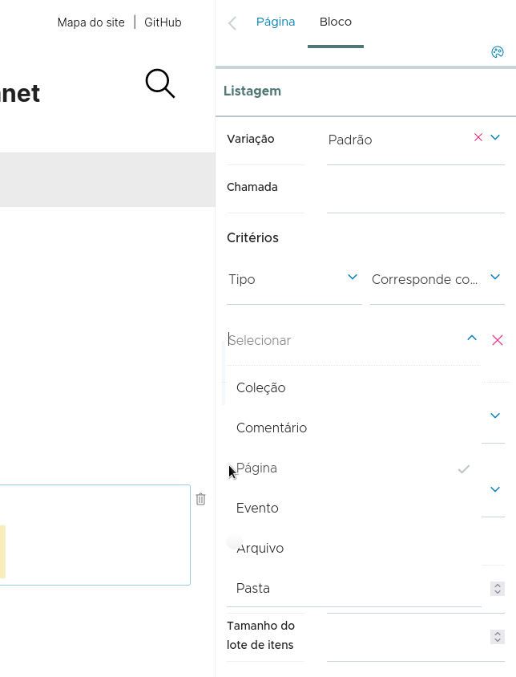
{kind=link}
Adicione outro critério, dessa vez do tipo Local.
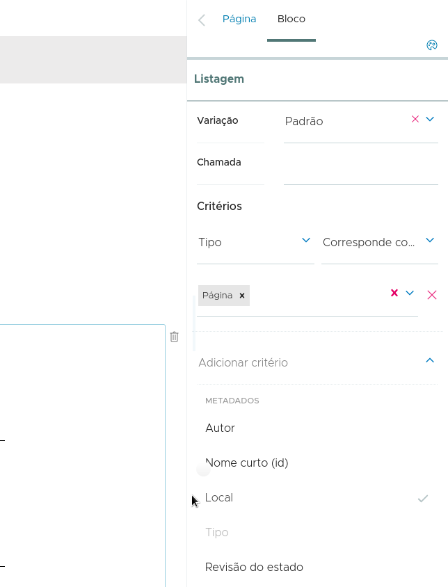
{kind=link}
Nas opções de Local escolha Caminho relativo.
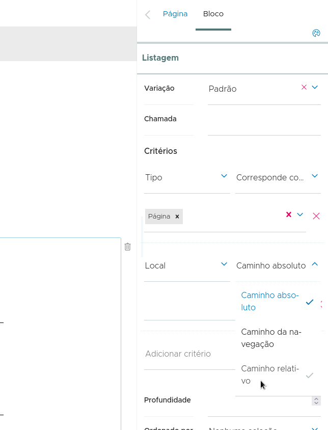
{kind=link}
Salve a página.
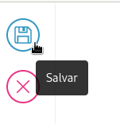
Vamos agora criar nossa página dentro da pasta Transparência. Clique no botão de adicionar conteúdo.
Escolha o tipo de conteúdo página.
Preencha o título, clique no botão + no primeiro bloco vazio e adicione uma imagem ao bloco de texto.
Envie uma imagem para ser o banner da página.
As opções da imagem podem ficar nos seus valores padrão.
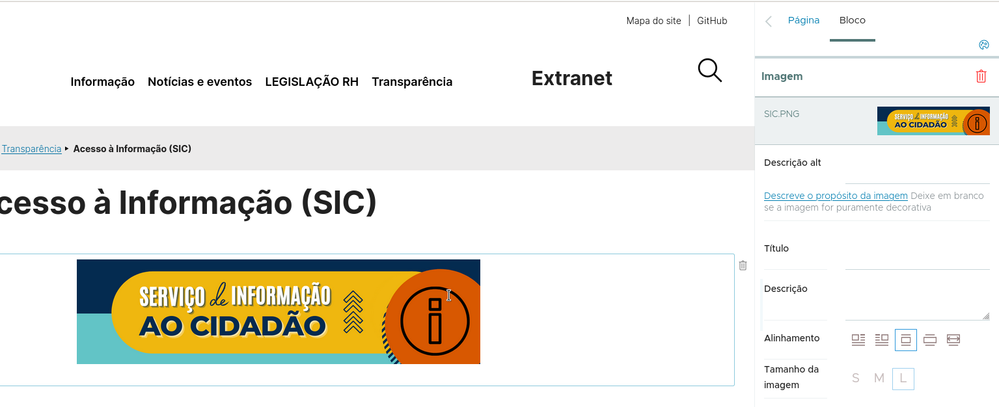
{kind=link}
Após a criação do banner você pode criar as colunas. O bloco de colunas pode ser encontrado na lista de blocos padrão. Clique na categoria 'PADRÃO' para encontrar o bloco de colunas.
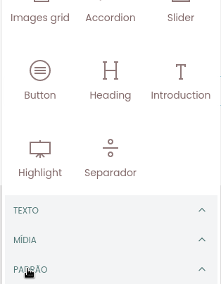
{kind=link}
Então clique no botão para adicionar o bloco de colunas.
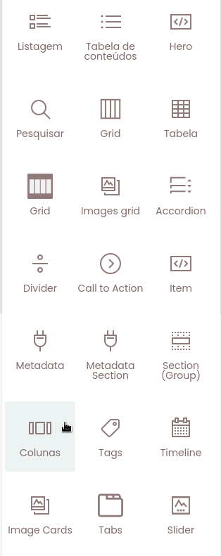
{kind=link}
Ao clicar no bloco de colunas serão apresentadas opções para escolher a disposição das colunas. Clique no botão 50/50.
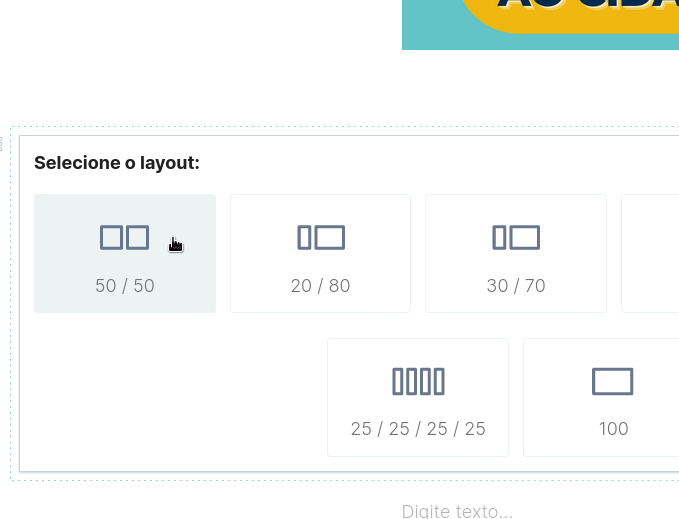
{kind=link}
Agora você pode adicionar o texto do lado esquerdo, como no exemplo abaixo onde um texto foi colado com formatação.
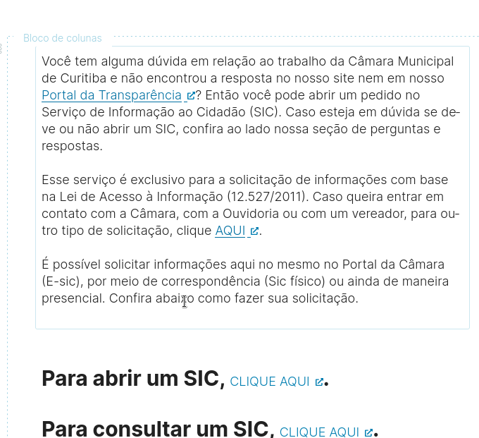
{kind=link}
Ao lado direito você pode adicionar um novo bloco no botão + que fica no canto direito superior da coluna.
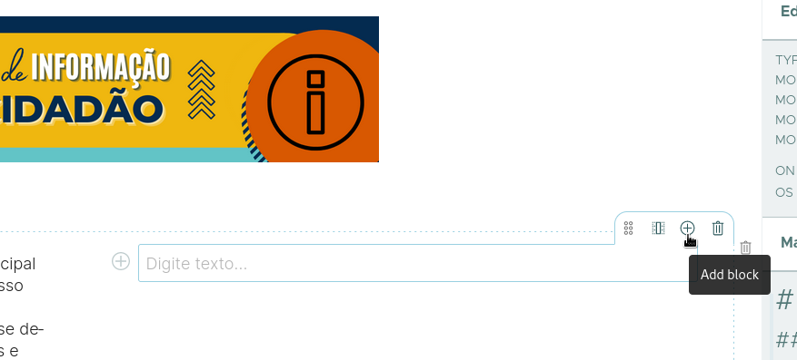
{kind=link}
Escolha o bloco 'Acordeão' para criar uma exibição de texto organizada em tópicos na coluna direita.
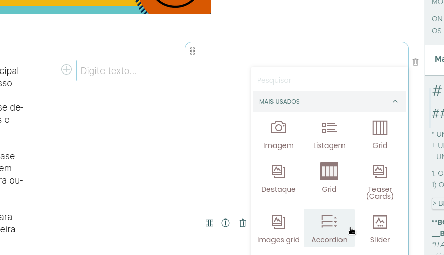
{kind=link}
Um acrodeão vazio permite que você adicione o título e conteúdo de 3 ítens por padrão. Você pode remover um ítem, clique no ícone de lixeira ao lado do ítem vazio.
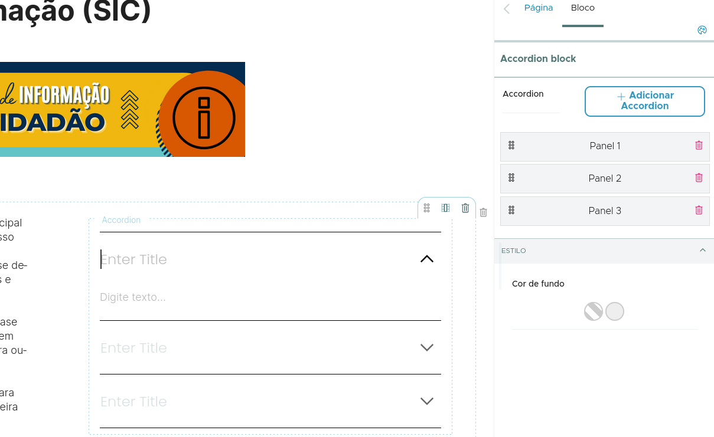
{kind=link}
Para adicionar ítens no acordeão clique no botão 'Adicionar acordeão'. Clique no ícone de lixeira ao lado de um ítem se quiser remover o ítem.
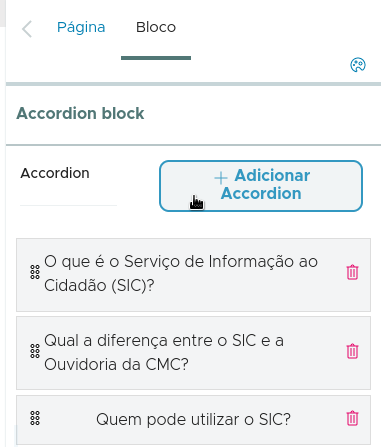
{kind=link}
Para abrir ou fechar o acordeão clique na seta ao lado direito do título.
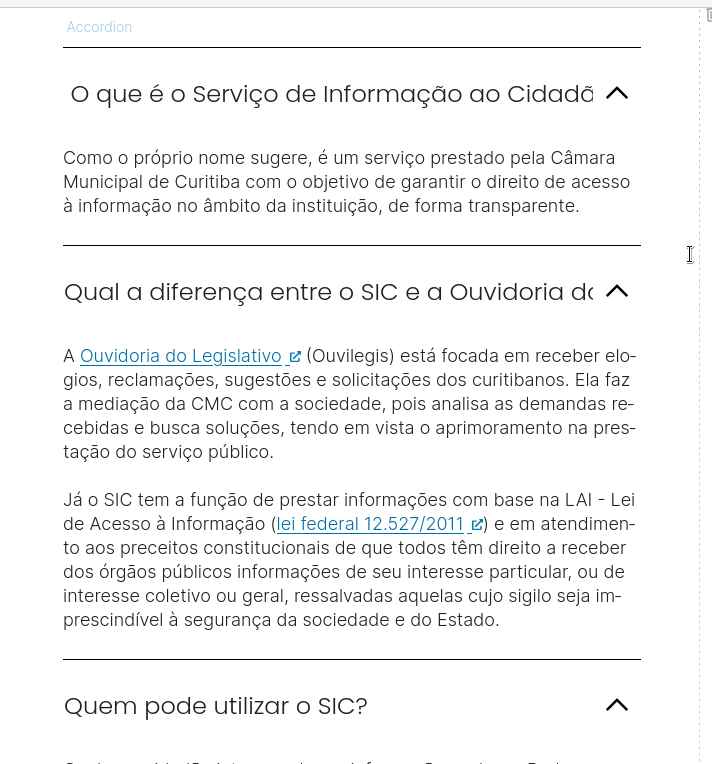
{kind=link}
Por fim, clique no botão salvar.
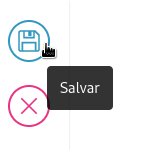